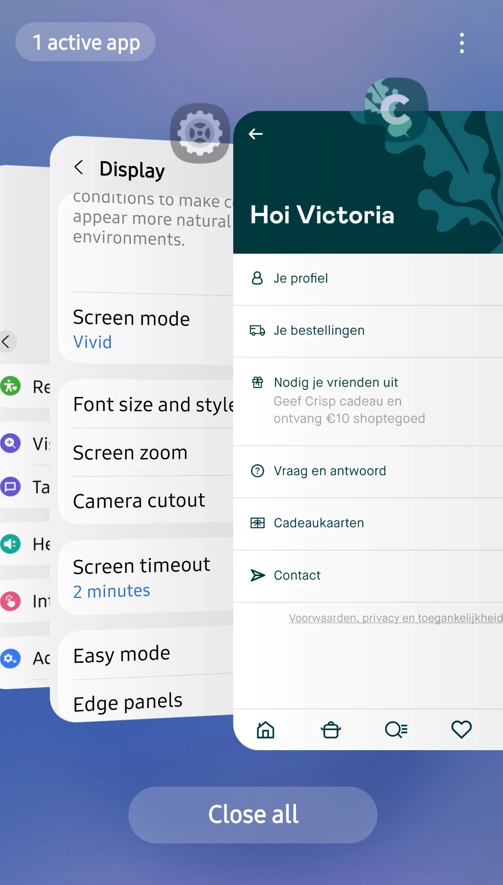
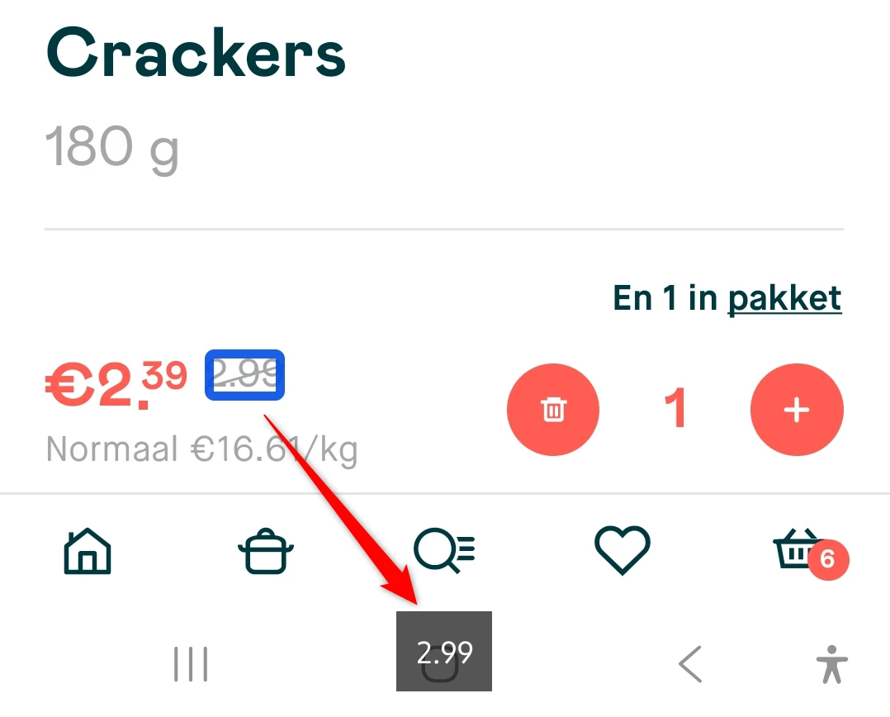

Audit digitale toegankelijkheid van de Crisp Android-app
Samenvatting
Wij hebben de Crisp Android-app onderzocht tussen 15 en 30 april 2026. Op dit moment is een deel van de succescriteria als voldoende beoordeeld. In dit rapport lees je welke punten nog verbetering behoeven en hoe deze kunnen worden aangepakt.
Web views (inhoud die binnen de app via een browser-component wordt getoond)
Ontoegankelijkheden die ontstaan door de manier waarop het device de app rendert, bijvoorbeeld kleurcontrast in alerts of de weergave van sommige knoppen
Inhoud afkomstig van derden
Basisniveau toegankelijkheidsondersteuning
Samsung Galaxy S25 (Android versie 16)
TalkBack schermlezer
Extern toetsenbord
Technologieën van de app
Android (native)
TalkBack
Hoe nu verder
Plan van aanpak
Download het plan van aanpak met een geprioriteerde aanpak om de gevonden problemen op te lossen.
Exporteer alle bevindingen als CSV-bestand. Je kunt het in een (online) spreadsheet inladen om met je team samen te werken.
Importeer in Jira
Exporteer alle bevindingen als Jira-compatibel CSV-bestand. Je kunt het direct importeren via Jira > Issues > Import issues from CSV.
Zelf bijhouden in de browser
Houd per bevinding bij of het is opgelost. Je voortgang wordt opgeslagen in jouw browser. Niemand anders kan je resultaat zien.
0 van
0 opgelost
TalkBack aanzetten en gebruiken (Android)
Om de bevindingen in dit rapport zelf te ervaren, test je de app met TalkBack — de schermlezer die standaard op iedere Android-telefoon en -tablet zit. Blinde en slechtziende gebruikers bedienen hun toestel hiermee. Hieronder vind je de stappen om TalkBack aan te zetten en de gebaren die je nodig hebt.
Let op: twee gebarensets. TalkBack kent twee varianten van sommige gebaren. De multi-finger-gebaren (met twee, drie of vier vingers) werken alleen op Android 11 of nieuwer én op Pixel 3 en nieuwer, Samsung Galaxy en een aantal andere toestellen. Op oudere of niet-ondersteunde toestellen gebruik je de L-vorm-alternatieven met één vinger. We noemen hieronder waar het verschil uitmaakt. Wil je weten welke set jouw toestel ondersteunt? Zet TalkBack aan en doe een three-finger tap — TalkBack vertelt je of multi-finger-gebaren actief zijn.
Tip. Oefen eerst een paar minuten in de Practice gestures-modus (op toestellen met multi-finger-ondersteuning: four-finger tap; anders via het TalkBack-menu → Help & feedback). Je kunt daar elk gebaar uitproberen zonder dat de app reageert. TalkBack vertelt je telkens welk gebaar je zojuist hebt gemaakt.
TalkBack aan- en uitzetten
De snelste manier is de volumeknop-sneltoets. Ga naar Instellingen → Toegankelijkheid → TalkBack → TalkBack-sneltoets en schakel deze in. Vanaf dat moment zet je TalkBack aan of uit door de volume-omhoog- en volume-omlaag-toets een paar seconden tegelijk ingedrukt te houden.
Alternatieven:
Instellingen → Toegankelijkheid → TalkBack → schakelaar aan of uit.
Vraag Google Assistant: "Hey Google, zet TalkBack aan" of "… uit".
De belangrijkste gebaren
Zodra TalkBack aan staat, werkt je toestel anders dan je gewend bent. Eén keer tikken selecteert alleen een element — je moet double-tappen om iets te activeren. Dit zijn de gebaren die je nodig hebt om door een scherm te bewegen:
Gebaar
Wat het doet
Veeg met één vinger naar rechts
Spring naar het volgende element.
Veeg met één vinger naar links
Spring naar het vorige element.
Sleep één vinger over het scherm
Explore by touch — TalkBack leest elk element voor dat je vinger raakt. Handig als je niet weet waar iets op het scherm staat.
Double-tap met één vinger
Activeer het element dat TalkBack heeft geselecteerd (link openen, knop indrukken, vinkje zetten). Je hoeft niet precies op het element te tikken.
Double-tap en vasthouden met één vinger
Lang indrukken (voor context-menu's en dergelijke).
Tik met twee vingers
Pauzeer of hervat de spraak. Handig als je iets wilt opschrijven.
Veeg met twee vingers omhoog, omlaag, links of rechts
Scroll door het scherm.
Het TalkBack-menu openen
Het TalkBack-menu is een ingebouwd menu met commando's als Lees vanaf boven, Zoek op scherm, navigatie-instellingen en hulp. Je opent het op twee manieren:
L-vorm (werkt altijd): veeg in één vloeiende beweging omlaag en dan naar rechts, of omhoog en dan naar rechts.
In dat menu vind je onder andere Read from top (lees het hele scherm vanaf het begin voor — essentieel om de leesvolgorde te controleren) en Read from next item (lees door vanaf het huidige element).
Reading controls: springen per type element
De reading controls zijn het equivalent van de VoiceOver Rotor op iOS. Je kiest eerst op welk type element je wilt springen — bijvoorbeeld alleen de koppen, alleen de links, of alleen de formuliervelden — en beweegt vervolgens van element naar element.
Wissel tussen reading controls: veeg in één L-vorm omhoog en dan omlaag, of omlaag en dan omhoog. Op multi-finger-toestellen: three-finger swipe omhoog of omlaag. Herhaal het gebaar om door de beschikbare reading controls te bladeren. TalkBack vertelt welke instelling actief is ("Koppen", "Links", "Bedieningselementen", …).
Volgend element van dat type: veeg met één vinger omlaag.
Vorig element van dat type: veeg met één vinger omhoog.
Welke reading controls beschikbaar zijn, stel je in via TalkBack-instellingen → Menu's aanpassen → Reading controls aanpassen. Sommige opties staan standaard uit.
Systeemnavigatie met TalkBack
Als TalkBack aan staat, werken ook een aantal toestel-acties met gebaren:
Terug: veeg omlaag en dan naar links.
Beginscherm: veeg omhoog en dan naar links.
Recente apps: veeg naar links en dan omhoog.
Meldingen openen: veeg naar rechts en dan omlaag, of met twee vingers omlaag vanaf de bovenkant.
Bevindingen reproduceren
In dit rapport staat bij elke bevinding een "Hoe te reproduceren"-sectie. Daar leggen we uit welke stappen en welke gebaren je moet gebruiken om het probleem zelf te zien. Gebruik deze instructie als naslag: als een stap verwijst naar "de volgende kop", dan weet je dat je de reading controls op Koppen moet zetten en met één vinger omlaag veegt.
Kom je er niet uit? Stuur ons gerust een mail op contact@properaccess.nl — we denken graag mee.
De lay-out van alle schermen is beperkt tot één oriëntatie (staand). Websites en applicaties moeten bruikbaar zijn in zowel verticale (staand) als horizontale (liggend) oriëntatie. Bezoekers moeten zelf kunnen bepalen welke oriëntatie voor hen het beste werkt.
User story
Als bezoeker met een apparaat dat in één oriëntatie staat vergrendeld – omdat de tablet op een rolstoel is gemonteerd, omdat ik de telefoon met één hand vasthoud, of door een vaste werkopstelling – heb ik elk scherm in de app nodig in zowel staand als liggend, omdat de lay-out nu alleen werkt in de oriëntatie die ik niet kan gebruiken. Daardoor ben ik buitengesloten van de app totdat iemand het apparaat fysiek voor mij draait.
Oplossing
Zorg dat de inhoud van de applicatie meedraait en zich aanpast aan de gekozen oriëntatie (staand of liggend).
Door de hele applicatie heen zijn teksten die visueel als kop functioneren niet als kop opgemaakt. Wanneer een kop geen juiste opmaak heeft, verliest hij zijn semantische betekenis en wordt onbereikbaar voor bezoekers die afhankelijk zijn van assistieve technologieën zoals screenreaders. Koppen zijn essentieel om door inhoud te navigeren en de structuur te begrijpen. Hieronder een paar voorbeelden, geen volledige lijst:
"Account aanmaken"-scherm: "Schermlezer aangepast", "Maak je account", "Kies je land", "Voor wie bestel je?"
"Account aanmaken > Contact"-scherm: tekst "Heb je een vraag?" in een dialoogvenster. Hetzelfde dialoogvenster opent vanaf elk productscherm via "Stel je vraag over dit product"
"Account aanmaken > Contact > Privacyverklaring"-scherm: "Nog even dit", "Je privacy bij Crisp" en andere
Home-scherm: meerdere koppen, bijvoorbeeld "Lekker van start", "Nu in de promo", "Recepten" en andere
"Maaltijdenoverzicht"-scherm: "Recepten", "Onze bestsellers", "Nu in promo", "Hoe lang mag't duren?" en andere
User story
Als screenreader-gebruiker gebruik ik leesopties om per kop te navigeren, zodat ik niet door elk element hoef te swipen. Wanneer koppen niet goed gedefinieerd zijn, moet ik scherm-element voor scherm-element navigeren. Daardoor wordt het lastig om informatie efficiënt te vinden.
Oplossing
Zorg dat deze teksten de juiste kop-semantiek krijgen die hun rol en hiërarchie in de inhoud weerspiegelt.
#3 - Onvoldoende contrastverhouding voor standaardtekst – witte tekst op rode knoppen
Op veel schermen van de app staan rode (#FF5C53) knoppen met witte tekst. Deze tekst heeft een onvoldoende contrastverhouding: 3,0:1. Normale tekst moet minimaal een contrastverhouding van 4,5:1 hebben en grote tekst minimaal 3,0:1. Hieronder een paar voorbeelden, geen volledige lijst:
"Account aanmaken"-scherm en andere schermen: knop "Volgende"
"Instellingen"-scherm: knop "Opslaan & doorgaan"
"Bestelling plaatsen > Kassa"-scherm: knop "Betalen"
"Eigen recept maken"-scherm: knop "Kies" naast een product om te selecteren
Verschillende schermen: teksten als "20% korting" op productkaarten
Sommige product- en bijbehorende detailschermen: teksten als "4 voor €4,49"
Het getal op het winkelmandje-icoon in het bottom menu, en op veel andere elementen door de hele app
Hetzelfde probleem zie je bij teksten in dezelfde rode kleur op een witte achtergrond, bijvoorbeeld:
Verschillende schermen en productschermen: rode prijs met korting
Product- en receptenschermen: tekst "Toevoegen" naast de "+"-knop
"Maaltijdenoverzicht > Weekbox-tab"-scherm: tekst "Ontdek het vanaf"
"Bestelling plaatsen"-scherm: aantal geselecteerde producten en op andere schermen
User story
Als bezoeker met een visuele beperking, kleurenblindheid of iemand die buiten in fel zonlicht leest, heb ik nodig dat tekst duidelijk afsteekt tegen de achtergrond. Als het contrast onder de drempel zakt, vervaagt de tekst in de achtergrond, moet ik turen of inzoomen, raak ik alsnog woorden kwijt, en geef ik het scherm uiteindelijk op.
Oplossing
Pas de tekstkleur, de achtergrondkleur of beide aan zodat de contrastverhouding minimaal 4,5:1 is. Controleer het resultaat met een contrastchecker en verifieer voor elke staat waarin de tekst voorkomt (standaard, over afbeeldingen, op gekleurde achtergronden) en in zowel licht als donker thema.
Op verschillende schermen van de applicatie staan x-knoppen om iets te verwijderen (in invoervelden) of om een dialoogvenster te sluiten. Deze knoppen hebben geen toegankelijke naam. Gebruikers van assistieve technologieën kunnen niet begrijpen wat hun functie is. Hieronder voorbeelden, maar het probleem komt op meer schermen voor:
"Account aanmaken"-scherm: x-knoppen naast het veld "Postcode" wanneer dit ingevuld is, en in het "Kies je land"-dialoogvenster dat opent vanuit de "Land"-selector
"Inloggen"-scherm: x-knop naast het veld "E-mail"
Verschillende schermen: x-knop om het "Heb je een vraag?"-dialoogvenster te sluiten dat opent vanuit de "Contact"-knop in de header
Verschillende schermen: x-knop om het "Privacyverklaring"-dialoogvenster te sluiten dat opent vanuit "Contact > Heb je een vraag? > Privacyverklaring"
User story
Als bezoeker die een screenreader of voicecontrol gebruikt, heb ik nodig dat elke knop een naam heeft die ik kan horen of uitspreken. Zonder naam kondigt de screenreader alleen de rol ("knop") aan zonder context, heeft Voice Control geen woord om te activeren, en kan ik het element helemaal niet bedienen.
Oplossing
Geef elke knop een duidelijke toegankelijke naam, afhankelijk van wat hij doet. Bijvoorbeeld "Verwijderen" of "Sluiten".
#5 - Uitgeschakelde of niet-beschikbare staat wordt niet doorgegeven aan assistieve technologieën
Op veel schermen lijken knoppen visueel uitgeschakeld (grijs) wanneer verplichte velden niet zijn ingevuld of bepaalde keuzes niet zijn gemaakt, maar deze uitgeschakelde staat wordt niet doorgegeven aan assistieve technologieën. Screenreader-gebruikers horen niet dat de knoppen niet geactiveerd kunnen worden. Voorbeelden:
"Account aanmaken"-scherm: knop "Volgende"
Home-scherm: in de header, in de uitklapsectie "Bezorging", de niet-beschikbare datum "Ma 27"
"Inspiratiepagina"- of zoekschermen: een product dat niet beschikbaar is – het ziet er uitgeschakeld uit en toont de melding "Niet meer verkrijgbaar" of "Nu buiten het seizoen", maar dit wordt niet aangekondigd
"Zoeken via categorieën"-scherm: knop "Verstuur" in een dialoogvenster dat opent vanuit de knop "Laat het ons weten!" onderaan de zoekresultaten, en diverse andere knoppen op andere schermen
User story
Als bezoeker die een screenreader gebruikt, wil ik horen of een knop uitgeschakeld is voordat ik hem probeer te activeren. Wanneer de screenreader een knop aankondigt alsof hij actief is, tik ik erop in de verwachting dat er iets gebeurt, gebeurt er niets, en ga ik troubleshooten wat ik fout deed terwijl het echte probleem is dat de knop nooit beschikbaar was.
Oplossing
Werk de toegankelijkheidsstaat van een bediening bij wanneer hij is uitgeschakeld. Zorg dat de visueel uitgeschakelde staat en de toegankelijkheidsstaat altijd synchroon lopen.
#6 - Onvoldoende contrastverhouding voor standaardtekst – grijze, rode, groene en blauwe tekst op witte achtergrond
Op veel schermen van de app staan teksten in grijs (#A5A8A8) op een witte achtergrond. Ze hebben een onvoldoende contrastverhouding: 2,4:1. Normale tekst moet minimaal 4,5:1 zijn, grote tekst minimaal 3,0:1. Hieronder een paar voorbeelden, geen volledige lijst:
Home en andere schermen: teksten als "1 kg", "1 liter", "per stuk", "50 x 4g" en andere in productitems
Home en andere schermen: doorgestreepte prijzen in productitems
Home-scherm: in de header, in de uitklapsectie "Bezorging", de tekst "Standaard bezorging, gratis vanaf €100"
Product- en bijbehorende detailschermen: kruimelpaden onderaan het scherm, boven de accordions
Op het home-scherm en veel andere schermen worden in productitems teksten in rood (#F06977), groen (#1BA690) en blauw (#5C85D6) gebruikt op witte achtergrond. Deze hebben een onvoldoende contrastverhouding: respectievelijk 3,0:1, 3,0:1 en 3,6:1. Tekst van deze grootte moet minimaal 4,5:1 zijn. Voorbeelden op het home-scherm:
rode teksten: "Lokaal en handgemaakt", "Gebakken op bestelling" en andere
groene teksten: "Langer gerijpt", "bio", "vegan", "fairtrade en duurzaam" en andere
blauwe teksten: "Borrelfavoriet", "Natuurlijke smaken" en andere
De combinatie van groen (#1BA690) en wit wordt veel gebruikt in de applicatie voor knoppen en geselecteerde filteropties. De lage contrastverhouding 3,0:1 voorkomt dat slechtziende gebruikers de geselecteerde opties zien. Voorbeelden:
Home-scherm: actieve opties onder de kop "Voor elk moment", zoals "Ontbijt, lunch"
Recepten-scherm, zoekscherm, "Jouw winkel"-scherm: geselecteerde opties in het "Filters"-dialoogvenster dat opent vanuit de knop "Filter"
Sommige product- en bijbehorende detailschermen: teksten als "4 voor €4,49" wanneer het voor de promotie vereiste aantal producten is geselecteerd
"Bestelling wijzigen"-scherm: knop "Wijzig bestelling" en op andere plekken in de app
User story
Als gebruiker met een visuele beperking of in lastige lichtomstandigheden, heb ik nodig dat tekst duidelijk te onderscheiden is van de achtergrond zodat ik de inhoud comfortabel kan lezen.
Oplossing
Pas tekst- en achtergrondkleuren aan om aan de contrasteisen te voldoen: minimaal 4,5:1 voor normale tekst en minimaal 3,0:1 voor grote tekst.
Bovenaan veel schermen staat een knop met een pijl die naar het vorige scherm leidt. Deze heeft geen toegankelijke naam. Daardoor begrijpen gebruikers die afhankelijk zijn van een screenreader het doel of de functie van de knop niet. Voorbeelden:
"Inspiratiepagina (Onze sterren)"
product- en bijbehorende detailscherm
"Maaltijdenoverzicht (Weekbox en Recepten)" en andere
User story
Als screenreader- of Voice Control-gebruiker heb ik nodig dat elke bediening een duidelijke naam heeft, zodat ik begrijp wat hij doet en hem kan bedienen.
Oplossing
Geef de knop een toegankelijke naam, bijvoorbeeld "Ga naar vorig scherm".
#8 - Productprijzen worden niet aangekondigd door de screenreader
Op veel schermen waar producten in een scrollbare lijst staan, zijn de prijzen visueel zichtbaar in elk productitem, maar worden ze niet aangekondigd door de screenreader. Daardoor kunnen gebruikers van assistieve technologieën essentiële productinformatie niet bereiken zonder elk item afzonderlijk te openen. Voorbeelden:
Home-scherm
"Inspiratiepagina (Onze sterren)"-scherm
product- en bijbehorende detailscherm: onder de kop "Pakkettips"
leveranciersdetailscherm: onder de kop "Van deze maker", en andere schermen
User story
Als screenreader-gebruiker die een productlijst doorloopt, heb ik nodig dat productprijzen programmatisch beschikbaar zijn zodat ze samen met elk item worden aangekondigd. Op dit moment zijn prijzen alleen visueel zichtbaar en moet ik elk product openen om de prijs te weten.
Oplossing
Zorg dat alle relevante productinformatie, inclusief de prijs, programmatisch wordt gekoppeld aan elk productitem en aan toegankelijkheidsdiensten wordt blootgesteld, zodat het wordt aangekondigd bij het navigeren door de lijst.
#9 - Aantalsbedieningen en productbedieningen zijn niet volledig toegankelijk
Op alle schermen met productlijsten en receptenlijsten zijn de "+"-knoppen binnen een productkaart niet bereikbaar met het toetsenbord of de screenreader. De focus komt alleen op de kaart zelf, niet erbinnen.
Hetzelfde geldt voor receptenkaarten met aantalknoppen, pijlknoppen om ingrediënten te wijzigen enzovoort. Voorbeelden:
Home-scherm: "+"- en prullenbak-knoppen op verschillende producten en recepten
receptenschermen: "1"- en pijlknoppen op producten
Bestelling plaatsen- en Bestelling wijzigen-schermen: op producten en andere
User story
Als screenreader- of toetsenbordgebruiker heb ik nodig dat aantalsbedieningen en bijbehorende terugkoppeling volledig toegankelijk zijn, zodat ik zelfstandig producten kan toevoegen en aanpassen.
Oplossing
Zorg dat alle interactieve bedieningen bereikbaar en bedienbaar zijn. Geef ze, wanneer ze toegankelijk worden gemaakt, een betekenisvolle toegankelijke naam en zorg dat aantalwijzigingen worden aangekondigd via toegankelijkheidsmeldingen.
#10 - Gefocuste inhoud wordt verborgen achter vaste interface-elementen
Op veel schermen kan de focus terechtkomen op inhoud die verborgen is achter een vaste header of footer, waardoor de gefocuste items niet volledig zichtbaar zijn. Dit maakt het lastig voor toetsenbord- en screenreader-gebruikers die ook visueel meekijken om te weten waar de focus staat. Het probleem komt voor op de pagina's:
product- en bijbehorende detailscherm
recept- en bijbehorende detailscherm
Zoeken via categorieën-scherm
Zoeken via zoekfunctie – producten en recepten
Zoeken via zoekfunctie – recepten
Feedback op bestelling geven
User story
Als toetsenbordgebruiker die de focus visueel volgt, heb ik nodig dat het gefocuste element zichtbaar blijft en niet volledig verborgen wordt achter vaste interface-onderdelen.
Oplossing
Zorg dat het gefocuste element volledig in beeld scrollt wanneer de focus verspringt. Reserveer voldoende ruimte zodat vaste headers en footers de gefocuste inhoud niet bedekken, of verwijder vaste headers en footers waar mogelijk.
Op veel schermen is er een focus-probleem met dialoogvensters. Terwijl het dialoogvenster open is, kan de focus naar bedieningen buiten het dialoogvenster verspringen. Dat doorbreekt het verwachte gedrag van een dialoog en kan gebruikers in verwarring brengen. Voorbeelden:
"Heb je een vraag?"-dialoogvenster dat opent vanaf verschillende schermen (bijvoorbeeld na het activeren van "Stel je vraag over dit product" op elk productscherm)
"Bestelling plaatsen"-scherm: dialoogvenster dat opent vanuit de "sorteren"-iconknop
Als screenreader- of toetsenbordgebruiker heb ik nodig dat de focus binnen een geopend dialoogvenster blijft, zodat ik de interactie kan afronden zonder per ongeluk naar de achtergrondinhoud te springen.
Oplossing
Verplaats de focus naar het dialoogvenster wanneer het opent. Houd de focus binnen het dialoogvenster vast totdat het wordt gesloten en geef de focus daarna terug aan de trigger.
#12 - Informatieve iconen op recepten worden niet correct overgebracht
Op verschillende schermen waar recepten in een lijst staan, bevatten ze een klok-icoon naast een tekst zoals "20 min". Het icoon betekent "bereidingstijd" maar wordt niet aangekondigd voor screenreader-gebruikers.
Een soortgelijk probleem zie je op het scherm "Bestelling plaatsen", op het cadeauproduct (croissants), waar de iconen "sneeuwvlok" en "klok" niet worden aangekondigd. Daardoor weten AT-gebruikers niet dat het product diepgevroren is en bereidingstijd nodig heeft.
User story
Als blinde screenreader-gebruiker heb ik nodig dat de informatieve iconen worden overgebracht, zodat ik weet hoe lang het ongeveer duurt om het gerecht te bereiden, of dat het ontdooid moet worden.
Oplossing
Geef tekstalternatieven voor de informatieve iconen, bijvoorbeeld "Bereidingstijd", of neem hun betekenis op in de toegankelijke tekst.
#13 - Geselecteerde filterstaat wordt niet doorgegeven aan assistieve technologieën
Op veel schermen staat een "Filter"-knop in de header. Die opent het "Filters"-dialoogvenster met talrijke opties. Wanneer een filter geselecteerd is, verandert hij visueel van kleur en krijgt een vinkje, maar de geselecteerde staat wordt niet aangekondigd door de screenreader. Daardoor kunnen gebruikers niet bepalen welke filters actief zijn.
User story
Als screenreader-gebruiker heb ik nodig dat filters aankondigen of ze geselecteerd zijn, zodat ik begrijp wat de huidige filtering is en die kan aanpassen.
Oplossing
Stel de geselecteerde staat programmatisch beschikbaar en werk hem bij telkens als de gebruiker een filter wijzigt.
#14 - Applicatie negeert de systeeminstelling voor lettergrootte
Impact: GrootType: TechniekWCAG: 1.4.4EN: 11.7

De applicatie respecteert de systeeminstelling voor lettergrootte niet. Wanneer de gebruiker de lettergrootte in de apparaatinstellingen vergroot of verkleint, schaalt de tekst in de app niet mee. Daardoor kunnen gebruikers met een visuele beperking de tekst niet vergroten om de leesbaarheid te verbeteren.
User story
Als gebruiker met een visuele beperking heb ik nodig dat de app de systeeminstelling voor lettergrootte respecteert, zodat ik de tekst kan vergroten voor betere leesbaarheid.
Oplossing
Zorg dat tekst meeschaalt met de systeeminstelling voor lettergrootte door schaalbare eenheden te gebruiken en platformlettertypeschaling te ondersteunen.
In de account-aanmaakflow is er een stap "Voor wie bestel je?". Op deze stap staan meerdere aantalselectoren. Elk bestaat uit een "+"- en een "–"-knop met een numerieke waarde ertussen, maar de knoppen hebben geen toegankelijke naam en de huidige waarde wordt niet aangekondigd door de screenreader. Daardoor begrijpen gebruikers het doel van de bedieningen niet en merken ze ook geen wijzigingen op wanneer de waarde verandert.
Een soortgelijk probleem komt voor op:
"Home > Profielicoon > Je profiel > Huishouden > Wie eet er mee?"-scherm
"Recept- en bijbehorende detail"-scherm > Ingrediënten-tab: bedieningen om het aantal "Porties" te selecteren
User story
Als screenreader-gebruiker heb ik nodig dat elke aantalselector zijn naam, huidige waarde en beschikbare acties laat horen, zodat ik het aantal items kan begrijpen en aanpassen.
Oplossing
Geef de "+"- en "–"-knoppen toegankelijke namen en zorg dat waardewijzigingen worden aangekondigd. Een betere aanpak is om de bediening te implementeren als één toegankelijke stepper, waarin de huidige waarde programmatisch wordt blootgesteld en bijgewerkt en verhoog/verlaag-acties duidelijk zijn gedefinieerd. Zo ervaren screenreader-gebruikers het als één samenhangende bediening met een naam, waarde en beschikbare acties.
#16 - Lage contrastverhouding voor kleine tekst – placeholders en labels in invoervelden
In de account-aanmaakflow, op de stap "Maak je account", staan invoervelden. Eerst zijn de placeholders, en later de labels erin ("Postcode", "Land", "E-mail"), grijs (#809DA0) op een witte achtergrond. De contrastverhouding is onvoldoende: 2,9:1.
Hetzelfde probleem zie je bij invoervelden op andere schermen, bijvoorbeeld op het "Inloggen"-scherm met de velden "E-mail" en "Land", en bij meerdere velden op het "Profiel > Je profiel > Accountgegevens"- en "Bezorgadres"-secties.
User story
Als gebruiker met een visuele beperking heb ik voldoende contrast nodig voor placeholders en labels in invoervelden, zodat ik de gevraagde informatie kan lezen en begrijpen.
Oplossing
Zorg dat het contrast van kleine tekst tot de achtergrond minimaal 4,5:1 is.
#17 - Pijl bij selector heeft onvoldoende contrast
Op dit scherm heeft de "Land"-selector een pijl om aan te geven dat hij uitklapbaar is. Het kleurcontrast tussen het grijze icoon (#B2C4C6) en de witte achtergrond is onvoldoende: 1,8:1. Informatieve iconen, zoals deze pijlen, moeten een contrastverhouding van minimaal 3,0:1 hebben tegen de achtergrond.
Hetzelfde probleem zie je op het "Inloggen"-scherm met het "Land"-veld.
User story
Als bezoeker met een visuele beperking, leeftijdsgebonden contrastverlies of een scherm in fel zonlicht, heb ik nodig dat elk menupijltje dat een uitklapbare inhoud aanduidt minimaal 3:1 contrast houdt met de achtergrond.
Oplossing
Verhoog het contrast tussen de pijliconen en de achtergrondkleur zodat aan deze eis wordt voldaan.
#18 - Het label-element is niet (correct) gekoppeld aan het invoerveld
Op dit scherm staat een dropdown-bediening om een land te selecteren – "Land". Deze bediening kondigt zijn toegankelijke label niet aan. Alleen de op dit moment geselecteerde optie wordt voorgelezen. Daardoor begrijpen screenreader-gebruikers het doel van het veld mogelijk niet. Daarnaast kan het verschil tussen het zichtbare label "Land" en het aangekondigde "Nederland" tot problemen leiden voor gebruikers van voicecontrol of een screenreader voor navigatie. De dropdown stelt ook zijn uitgeklapt/ingeklapt-staat niet beschikbaar voor de screenreader. Gebruikers krijgen daardoor niet te horen of de lijst met opties open of gesloten is.
Hetzelfde probleem zie je op het "Inloggen"-scherm met het "Land"-veld.
User story
Als screenreader- of voicecontrolgebruiker heb ik nodig dat de land-dropdown zijn label, huidige waarde en uitgeklapt/ingeklapt-staat aankondigt, zodat ik het doel begrijp en correct kan bedienen. Zonder deze informatie weet ik niet wat het veld vertegenwoordigt of de lijst geopend is.
Oplossing
Geef de dropdown een programmatisch gekoppeld label zodat de screenreader het doel van het veld samen met de geselecteerde waarde aankondigt. Zorg dat de dropdown zijn uitgeklapt/ingeklapt-staat blootstelt via toegankelijkheid, zodat TalkBack die kan aankondigen.
#19 - Onvoldoende contrast voor kleine tekst in dialoogvenster Heb je een vraag?
Na een klik op de "Contact"-knop verschijnt het dialoogvenster "Heb je een vraag?". De tekst "Door contact… privacyverklaring" is lichtgrijs (#A5A8A8) op een blauwe achtergrond (#E0E9FA). De contrastverhouding is te laag: 2,0:1.
User story
Als gebruiker met een visuele beperking heb ik duidelijk tekstcontrast nodig zodat ik de inhoud gemakkelijk kan lezen.
Na een klik op de "Contact"-knop verschijnt het dialoogvenster "Heb je een vraag?". De focus komt nooit op de link "onze privacyverklaring" erin terecht. Alle interactieve elementen moeten toegankelijk zijn met het toetsenbord of via swipen.
De "Contact"-knop is op veel schermen beschikbaar, dus het probleem komt daar ook voor.
User story
Als screenreader- of toetsenbordgebruiker in de mobiele app heb ik nodig dat alle interactieve elementen in het dialoogvenster bereikbaar zijn via toegankelijkheid en toetsenbordfocus, zodat ik kan navigeren en activeren. Anders kan ik de "onze privacyverklaring"-link niet bereiken en mijn taak niet afronden.
Oplossing
Zorg dat de focus alle interactieve elementen bereikt.
Na een klik op de "Contact"-knop verschijnt het dialoogvenster "Heb je een vraag?". Na een klik op "onze privacyverklaring" verschijnt een scherm met veel inhoud. Visueel bevat de inhoud koppen, lijsten en alinea's, maar voor screenreader-gebruikers wordt het gepresenteerd als één ongestructureerd tekstblok. Koppen, alinea's en lijsten zijn niet programmatisch gedefinieerd. Daardoor kunnen screenreader-gebruikers de inhoud niet efficiënt navigeren of begrijpen.
Hetzelfde probleem komt voor op:
"Leveranciersdetailpagina" waar algemene informatie over de leverancier wordt getoond
sommige productschermen voor leveranciersinformatie onder de kop "Over de herkomst"
"Besteloverzicht > Algemene Voorwaarden Crisp B.V.", onder de knop "Openen als PDF"
alle documentschermen op "Profiel > Voorwaarden, privacy en toegankelijkheid" en andere
User story
Als screenreader-gebruiker heb ik nodig dat de inhoud op de privacypagina is gestructureerd met koppen, lijsten en alinea's, zodat ik efficiënt kan navigeren en de inhoud kan begrijpen. Anders wordt de inhoud als één tekstblok voorgelezen, waardoor het lastig is om te volgen en te gebruiken.
Oplossing
Structureer de inhoud door deze in logische secties en alinea's op te splitsen, koppen te markeren met heading-eigenschappen, en lijsten te implementeren via correcte semantiek voor verzamelingen.
#22 - Decoratieve afbeeldingen zijn niet verborgen voor screenreaders
Op het "Nog even dit"-scherm staan iconen van een vrachtwagen, label en hartje. Het zijn puur decoratieve afbeeldingen, maar ze zijn niet verborgen voor screenreaders en krijgen toetsenbordfocus zonder iets aan te kondigen. Daardoor raken screenreader-gebruikers in verwarring.
User story
Als bezoeker die de app navigeert met een screenreader, swipe ik door elk element heen om te horen wat er op het scherm staat. Wanneer een onbenoemde afbeelding screenreader-focus krijgt, pauzeert de screenreader er stil op, raak ik mijn plek in het scherm kwijt, en kan ik niet bepalen of ik een betekenisvolle afbeelding mis of slechts een decoratie.
Oplossing
Decoratieve afbeeldingen geven geen extra informatie en moeten daarom verborgen worden voor screenreaders.
#23 - Toggle-bedieningen kondigen aan/uit-staat niet aan
Op het "Instellingen"-scherm staan meerdere toggle-bedieningen. Ze kondigen hun huidige staat (aan/uit) niet aan wanneer de focus erop valt met TalkBack. Er klinkt alleen een generieke hint ("dubbeltik om te activeren"), waardoor screenreader-gebruikers niet kunnen bepalen of de toggle aan of uit staat.
User story
Als bezoeker die een toggle-knop met een screenreader gebruikt, heb ik nodig dat de huidige staat van de toggle programmatisch beschikbaar is. Op dit moment verandert de toggle visueel van staat als ik erop druk, maar mijn screenreader kondigt niets aan over in welke staat hij staat.
Oplossing
Zorg dat de screenreader de huidige staat van de toggle-knop voorleest.
Na een klik op de knop "Opslaan & doorgaan" op het "Instellingen"-scherm verschijnt het dialoogvenster "Mogen we pushberichten sturen over je bezorging?". Boven deze tekst krijgt de toetsenbordfocus een onzichtbaar interactief element. Onzichtbare interactieve elementen mogen niet in de focusvolgorde worden opgenomen. Dit kan leiden tot per ongeluk activeren en verwarring, vooral voor gebruikers die afhankelijk zijn van screenreader- of toetsenbordnavigatie.
User story
Als bezoeker die navigeert met het toetsenbord of een screenreader, heb ik nodig dat de toetsenbordfocus alleen op zichtbare interactieve elementen blijft – nooit op verborgen knoppen, velden of andere elementen.
Oplossing
Zorg dat alleen zichtbare interactieve elementen focusbaar zijn en dat de focusvolgorde een logische volgorde aanhoudt.
De land-dropdown ("Land") wordt blootgesteld als twee aparte focusbare elementen. Bij het navigeren met een screenreader kondigt de eerste focus alleen de geselecteerde waarde aan (bijvoorbeeld "Nederland"), terwijl de tweede focus het label van het veld ("Land") als uitgeschakeld aankondigt.
Dit inconsistente gedrag maakt het onduidelijk dat beide focuspunten bij dezelfde bediening horen en kan gebruikers in verwarring brengen over het doel en de staat van het veld.
User story
Als screenreader-gebruiker heb ik nodig dat de land-dropdown wordt gepresenteerd als één consistente bediening met een duidelijk label, waarde en staat, zodat ik het doel begrijp en correct kan bedienen.
Oplossing
Zorg dat de dropdown wordt blootgesteld als één toegankelijk element met een correct gekoppeld label, huidige waarde en staat (bijvoorbeeld in/uitgeschakeld, uitgeklapt/ingeklapt). Splits de bediening niet in meerdere focusbare elementen op en zorg voor consistente aankondigingen voor alle relevante informatie.
#26 - Foutmeldingen worden niet aangekondigd aan screenreader-gebruikers
Op dit scherm verschijnt een foutmelding zoals "Vul een volledig e-mailadres in" onder het veld "E-mail" wanneer dit verkeerd is ingevuld. Deze tekst is een statusbericht maar wordt niet aangekondigd door de screenreader. Wanneer informatie op het scherm verandert – een bevestiging, een fout, een laadstaat – moeten screenreader-gebruikers een melding krijgen zonder de focus naar de tekst te hoeven verplaatsen.
Hetzelfde probleem zie je op het "Maak je account"-scherm.
User story
Als bezoeker die een screenreader gebruikt, heb ik nodig dat ik het hoor wanneer er iets belangrijks op het scherm verandert. Wanneer een succesbanner, een formulierfout of een laadspinner stilletjes verschijnt, weet ik niet dat de app iets heeft gedaan, blijf ik op dezelfde knop tikken in de veronderstelling dat hij kapot is, of mis ik een fout die juist uitlegde waarom mijn invoer niet werd geaccepteerd.
Oplossing
Stuur statuswijzigingen als live-aankondigingen naar assistieve technologieën zonder de focus te verplaatsen. De gebruiker moet blijven waar hij is en de melding op de achtergrond horen.
Dit scherm heeft meerdere problemen met de focusvolgorde in de bezorgtijdselector:
Wanneer de "Bezorging"-sectie is uitgeklapt en er een uitgeschakelde dag is, bijvoorbeeld "Ma 27", wordt onder die knop een knop "Geen Bezorging" getoond, maar de focus komt daar niet terecht na "Ma 27", maar na "Di 28". Dat is verwarrend voor screenreader-gebruikers omdat ze niet kunnen begrijpen op welke datum er geen bezorging is.
Wanneer op "Geen Bezorging" wordt geklikt, opent een dialoogvenster, maar de focus komt daar niet in terecht. De focus blijft onder het dialoogvenster doorlopen.
Wanneer het "Kies bezorgtijd"-dialoogvenster is geopend, komt de focus na de laatste optie "18:00-22:00 €4.95" op onzichtbare elementen.
User story
Als screenreader-gebruiker heb ik nodig dat de focusvolgorde de visuele en logische structuur van de interface volgt, zodat ik begrijp welke acties bij welke elementen horen. Anders, wanneer de focus springt (bijvoorbeeld "Geen Bezorging" verschijnt na de verkeerde datum) of niet in een dialoogvenster valt, raak ik de context kwijt en kan ik niet correct met de inhoud werken.
Oplossing
Zorg dat de focusvolgorde de visuele en logische structuur van de UI volgt, zodat verwante elementen in de juiste volgorde worden aangekondigd. Werk de focusvolgorde bij wanneer dynamische inhoud wordt onthuld (bijvoorbeeld bij uitklapsecties), zodat nieuw zichtbare elementen op de verwachte plek verschijnen. Verplaats de focus daarnaast naar het dialoogvenster wanneer het opent en hou hem daarbinnen vast, zodat navigatie naar achtergrondinhoud niet mogelijk is totdat het dialoogvenster wordt gesloten.
#28 - Iconenknoppen hebben geen toegankelijke naam
Op dit scherm heeft het profielicoon geen toegankelijke naam. Daardoor horen screenreader-gebruikers een "knop"-element zonder context en begrijpen ze het doel niet.
Hetzelfde probleem komt voor bij knoppen met de iconen "hartje" en "delen" op de schermen "Product- en bijbehorende detail" en "Recept- en bijbehorende detail", bij het "sorteren"-icoon op "Bestelling plaatsen" en "Bestelling wijzigen", en bij het "cadeau"-icoon op het home-scherm na de eerste bestelling.
User story
Als blinde screenreader-gebruiker heb ik nodig dat de knoppen een duidelijke toegankelijke naam hebben, zodat ik het doel begrijp en kan bedienen.
Oplossing
Geef de iconen een betekenisvolle toegankelijke naam die hun doel duidelijk beschrijft (bijvoorbeeld "Open profiel", "Voeg toe aan favorieten", "Delen").
#29 - Items zijn visueel een lijst maar niet als lijst gemarkeerd
Onder de kop "Lekker van start" wordt een groep van twee items visueel als lijst gepresenteerd, maar de lijststructuur wordt niet programmatisch overgebracht. Wanneer lijst-semantiek ontbreekt, weten gebruikers van assistieve technologie niet hoeveel items bij de groep horen of dat ze één bij elkaar horende set vormen.
Hetzelfde probleem komt voor bij een vergelijkbare lijst onder de kop "Blijf lekker shoppen", die na de eerste bezorging in plaats van "Lekker van start" wordt getoond.
User story
Als bezoeker die een screenreader gebruikt, ben ik afhankelijk van lijstaankondigingen als "lijst, 2 items" en "item 1 van 2" om te begrijpen hoeveel inhoud er in een groep zit. Wanneer verwante items niet als lijst zijn gemarkeerd, weet ik niet waar de groep begint of eindigt, hoeveel items er zijn, of dat ik ze allemaal heb gelezen.
Oplossing
Markeer deze groep als een lijst met afzonderlijke lijstitems. Pas dezelfde behandeling toe op vergelijkbare visuele lijsten elders in de applicatie.
#30 - Geselecteerde filterstaat niet programmatisch overgebracht
Op dit scherm worden onder de kop "Voor elk moment" filteropties als knoppen gepresenteerd, bijvoorbeeld "Ontbijt, lunch", "Avondeten" en andere. De geselecteerde optie verschilt visueel van andere opties, maar deze staat wordt niet doorgegeven aan de screenreader. Daardoor kunnen gebruikers van assistieve technologieën niet bepalen welk filter actief is.
Hetzelfde probleem komt voor op het "Maaltijdenoverzicht > Recepten"-scherm, onder de koppen "Hoe lang mag't duren?", "Kies wat je eet", "In elke keuken thuis" en "Van alles het beste".
Een vergelijkbaar probleem zie je in het "Feedback op bestelling geven > Geef een extraatje"-dialoogvenster bij de knoppen "€1", "€3", "€5" en "Anders".
User story
Als screenreader-gebruiker heb ik nodig dat het geselecteerde filter programmatisch wordt aangegeven, zodat ik begrijp welke optie op dit moment actief is.
Oplossing
Zorg dat de geselecteerde staat van filterknoppen programmatisch wordt blootgesteld (bijvoorbeeld via een selected/pressed-staat) en wordt aangekondigd door de screenreader.
#31 - Interactief icoon is niet bereikbaar voor assistieve technologieën
Op het home-scherm zijn onder de kop "Recepten" de hartje-iconen op de gerechtenafbeeldingen interactief, maar ze zijn niet bereikbaar via toegankelijkheidsfocus. Wanneer een interactief element geen focus kan krijgen, kunnen screenreader- en toetsenbordgebruikers het niet gebruiken.
Hetzelfde probleem komt voor op andere schermen met recepten:
Maaltijdenoverzicht (Weekbox en Recepten)
Verschillende Zoeken-schermen
User story
Als screenreader-gebruiker heb ik nodig dat elk interactief icoon bereikbaar en bedienbaar is, zodat ik dezelfde functies kan gebruiken als ziende gebruikers.
Oplossing
Zorg dat het hartje-icoon in de focusvolgorde wordt opgenomen. Zorg dat het een toegankelijke naam blootstelt en geactiveerd kan worden via toegankelijkheidsdiensten en toetsenbordinteractie.
#32 - Aantal producten in het winkelmandje wordt niet aangekondigd
Het winkelmandje-icoon in het bottom menu toont een visuele badge met het aantal toegevoegde items (bijvoorbeeld "1"), maar deze informatie wordt niet aangekondigd door de screenreader. Daardoor zijn gebruikers die afhankelijk zijn van assistieve technologieën niet op de hoogte van het aantal items in het mandje.
User story
Als screenreader-gebruiker heb ik nodig dat het winkelmandje-icoon het aantal items aankondigt, zodat ik de huidige staat van mijn mandje begrijp.
Oplossing
Zorg dat het aantal items in het mandje programmatisch wordt blootgesteld en is opgenomen in de toegankelijke naam of beschrijving van het winkelmandje-icoon, zodat het door de screenreader wordt aangekondigd.
Issues met ontbrekende toegankelijke knopnamen, niet aangekondigde informatie, uitgeschakelde staten, contrast en andere zijn beschreven in de vorige secties.
#33 - Informatieve afbeeldingen hebben geen tekstalternatief
Sommige producten tonen een visuele "%"-badge die een promotie aangeeft, maar deze informatie wordt niet aangekondigd door de screenreader. Daardoor zijn gebruikers die afhankelijk zijn van assistieve technologieën niet op de hoogte van beschikbare kortingen, tenzij ze de productpagina openen.
Het probleem zie je ook op andere schermen met productlijsten.
User story
Als screenreader-gebruiker heb ik nodig dat promotionele indicatoren worden aangekondigd, zodat ik begrijp welke producten in de aanbieding zijn.
Oplossing
Zorg dat promotiebadges programmatisch worden overgebracht, bijvoorbeeld door de promotie-informatie op te nemen in de toegankelijke naam of beschrijving van het productitem.
Op het productdetailscherm krijgt de hoofdproductafbeelding screenreader-focus, maar er wordt niets betekenisvols aangekondigd. Daardoor weet de gebruiker niet of de afbeelding belangrijke informatie bevat of puur decoratief is.
User story
Als screenreader-gebruiker heb ik nodig dat gefocuste afbeeldingen óf een bruikbaar tekstalternatief geven óf verborgen worden voor toegankelijkheid wanneer ze decoratief zijn, zodat ik geen tijd verlies aan stille elementen.
Oplossing
Geef een tekstalternatief dat het product identificeert en beschrijft als de afbeelding informatief is. Verwijder de afbeelding uit de toegankelijkheidsboom en uit de focusvolgorde als hij decoratief is.
#35 - Focusvolgorde volgt de visuele volgorde niet
Bij het openen van dit scherm komt de focus niet eerst op de bedieningen die visueel bovenaan staan (de "terug"-knop, de "favoriet"- en "delen"-knoppen) maar landt eerst op de productafbeelding en vervolgens op de kortingstekst "20% korting", die visueel lager staan. Daardoor is de interface lastig te begrijpen voor gebruikers die sequentieel navigeren.
Een soortgelijk focusprobleem zie je op de "Recept- en bijbehorende detail"-schermen.
User story
Als screenreader-gebruiker heb ik nodig dat de focus de visuele en logische volgorde van het scherm volgt, zodat ik een correct mentaal model van de pagina kan opbouwen.
Oplossing
Pas de focusvolgorde aan zodat top-level navigatie en sleutelbedieningen worden bereikt vóór secundaire inhoud zoals kortingslabels.
#36 - Doorgestreepte prijs-semantiek ontbreekt
Impact: GrootType: ContentWCAG: 1.3.1EN: 11.1.3.1

Een product in de aanbieding heeft een oude en een nieuwe prijs. De oude prijs is doorgestreept, waardoor hij voor een ziende gebruiker direct te onderscheiden is van de afgeprijsde prijs. Maar gebruikers van assistieve technologieën zijn zich daar niet van bewust. Beide prijzen worden voor hen op dezelfde manier aangekondigd. Daardoor missen ze belangrijke prijscontext.
Het probleem komt door de hele applicatie heen voor, waar afgeprijsde doorgestreepte prijzen aanwezig zijn.
User story
Als screenreader-gebruiker heb ik nodig dat oude en huidige prijzen programmatisch onderscheiden worden, zodat ik de prijsinformatie correct begrijp.
Oplossing
Zorg dat de oude prijs wordt blootgesteld met context als "oude prijs" of equivalent, en dat de huidige prijs duidelijk daarvan wordt onderscheiden.
#37 - Bericht over toevoegen aan winkelmandje wordt niet aangekondigd en verdwijnt snel
Op het productscherm verschijnt visueel een statusbericht zoals "1 in mandje" wanneer een product aan het mandje wordt toegevoegd, maar dit bericht wordt niet aangekondigd door de screenreader.
Hetzelfde probleem zie je op het "Eigen recept maken"-scherm na een klik op de knop "Toevoegen aan mandje", en op productschermen wanneer er op het hartje in de header wordt geklikt.
User story
Als screenreader-gebruiker heb ik nodig dat aantalwijzigingen direct worden aangekondigd, zodat ik begrijp wat er gebeurde nadat ik een bediening heb geactiveerd.
Oplossing
Kondig toevoegen/verwijderen-updates aan via een passend statusbericht-mechanisme. Houd belangrijke bevestigingsberichten lang genoeg beschikbaar om opgemerkt te kunnen worden, of bied een manier om ze te sluiten.
#38 - Aantalsbedieningen missen toegankelijke namen en statusterugkoppeling
Op het productscherm hebben de "+"-knop en de prullenbak-knop, die worden gebruikt om de hoeveelheid te wijzigen wanneer er minimaal 1 product is toegevoegd, geen toegankelijke namen.
User story
Als screenreader-gebruiker heb ik nodig dat aantalsbedieningen betekenisvolle namen hebben.
Oplossing
Geef de knoppen toegankelijke namen die hun functie duidelijk beschrijven.
#39 - Promotievoortgang wordt niet aangekondigd voor screenreaders
Producten in de aanbieding tonen een visueel label (bijvoorbeeld "4 voor €11.49") met een voortgangsindicator die laat zien hoeveel items er richting de aanbieding zijn toegevoegd. Naarmate de gebruiker items toevoegt, wordt een voortgangsbalk bijgewerkt. Zodra het vereiste aantal is bereikt, verandert het label visueel: van rood naar groen met een vinkje. Deze dynamische updates worden echter niet aangekondigd door de screenreader. Daardoor zijn gebruikers die afhankelijk zijn van assistieve technologieën niet op de hoogte van hun voortgang of dat ze in aanmerking zijn gekomen voor de promotie. Dat maakt het lastig om de aanbieding te begrijpen of ervan te profiteren.
Hetzelfde probleem zie je op het "Jouw winkel"-scherm.
User story
Als screenreader-gebruiker heb ik nodig dat updates van de promotievoortgang en de afgeronde staat worden aangekondigd, zodat ik begrijp hoeveel items ik heb toegevoegd en of ik aan de voorwaarden van de aanbieding heb voldaan.
Oplossing
Zorg dat alle dynamische wijzigingen aan de promotie-indicator (voortgangsupdates en afgeronde staat) programmatisch worden blootgesteld en aangekondigd aan assistieve technologieën. Dit kan via passende mechanismen zoals live regions of vergelijkbare toegankelijkheidsmeldingen, zodat gebruikers worden geïnformeerd zonder de focus te hoeven verplaatsen.
#40 - Kruimelpadnavigatie wordt niet als kruimelpad overgebracht
Onder de "Pakkettips"-sectie wordt visueel een kruimelpadachtige navigatie getoond, maar deze wordt niet duidelijk overgebracht aan assistieve technologieën als kruimelpadnavigatie. Gebruikers horen de items mogelijk als losse teksten of links zonder hun samenhang te begrijpen.
User story
Als screenreader-gebruiker heb ik nodig dat kruimelpadnavigatie als zodanig wordt geïdentificeerd, zodat ik begrijp waar ik me in de app-hiërarchie bevind.
Oplossing
Groepeer de kruimelpadlinks programmatisch en geef een passend label voor de kruimelpadnavigatie.
#41 - Accordion-bedieningen kondigen uitgeklapt of ingeklapt staat niet aan
Onderaan het productscherm staan secties met verborgen inhoud, zoals "Bewaaradvies", "Voedingswaarden" en andere. Hun uitgeklapt/ingeklapt-staat wordt niet aangekondigd door de screenreader. Gebruikers kunnen daardoor niet bepalen of een sectie open of gesloten is.
Hetzelfde probleem zie je bij vergelijkbare uitklapsecties op andere schermen, bijvoorbeeld op:
"Zoeken via categorieën > Vers bereid > Maaltijden > Vers bereid door de beste chefs"
"Profiel > Vraag en antwoord" en andere
User story
Als screenreader-gebruiker heb ik nodig dat secties met verborgen inhoud aankondigen of ze uitgeklapt of ingeklapt zijn, zodat ik de huidige staat van elke sectie begrijp.
Oplossing
Stel deze bedieningen bloot met de juiste rol en staat. Werk de uitgeklapt/ingeklapt-staat bij telkens als de sectie wordt gewisseld.
Onder de recepttitel, naast "35 min. bereiding", krijgt het klok-icoon focus, maar de screenreader kondigt niets betekenisvols aan. Anders dan bij hetzelfde klok-icoon op receptkaarten (beschreven in vorige secties), kan het icoon op dit scherm als decoratief worden beschouwd, omdat de tekst ernaast ook het woord "bereiding" bevat, dat als alternatief kan dienen.
User story
Als screenreader-gebruiker heb ik nodig dat decoratieve iconen verborgen worden wanneer dezelfde informatie al beschikbaar is in tekst.
Oplossing
Verwijder het klok-icoon uit de focusvolgorde, omdat dezelfde informatie al ernaast staat.
#43 - Productprijzen en hoeveelheden in ingrediëntenkaarten worden niet volledig aangekondigd
Op de "Ingrediënten"-tab stellen de productkaarten van ingrediënten belangrijke informatie zoals prijs en hoeveelheid niet bloot aan de screenreader. Dat voorkomt dat niet-ziende gebruikers begrijpen wat zal worden toegevoegd.
User story
Als screenreader-gebruiker heb ik nodig dat alle essentiële informatie in ingrediëntenkaarten, inclusief hoeveelheid en prijs, programmatisch beschikbaar is, zodat ik de receptingrediënten kan beoordelen.
Oplossing
Zorg dat elke ingrediëntkaart zijn sleutelinformatie blootstelt, inclusief de productnaam, hoeveelheid en prijs.
#44 - Interactieve bedieningen zijn niet toetsenbordtoegankelijk
Op de "Ingrediënten"-tab zijn de klikbare aantalwaarden, de pijlknoppen om producten te wijzigen en de "Toevoegen"-knop in de ingrediëntenkaarten niet allemaal bereikbaar via toetsenbord- of toegankelijkheidsfocus. Daardoor kunnen AT-gebruikers niet volledig met de receptingrediënten werken.
Soortgelijke issues komen voor op het "Zoeken via categorieën > Fruit"-scherm.
User story
Als toetsenbord- of screenreader-gebruiker heb ik nodig dat alle interactieve bedieningen bereikbaar en bedienbaar zijn, zodat ik ingrediënten kan toevoegen en aanpassen.
Oplossing
Zorg dat alle interactieve elementen op de "Ingrediënten"-tab in de focusvolgorde zijn opgenomen en geactiveerd kunnen worden via toetsenbord- en toegankelijkheidsdiensten.
#45 - Onvoldoende contrastverhouding voor grote tekst
Op de "Bereiding"-tab zijn de receptstappen (1, 2, 3 enzovoort) lichtblauw (#CEF0F0) op een witte achtergrond. De tekst is groot, maar de contrastverhouding is alsnog onvoldoende: 1,2:1. Grote tekst moet een verhouding van minimaal 3,0:1 hebben.
Een soortgelijk contrastprobleem met stapnummers staat ook op het "Bereiding"-scherm dat opent vanuit de knop "Start in kookstand".
User story
Als gebruiker met een visuele beperking of in slechte lichtomstandigheden, heb ik voldoende contrast tussen tekst en achtergrond nodig zodat ik zonder moeite kan lezen.
Oplossing
Verhoog het contrast tussen tekst en achtergrond zodat aan de minimale eisen wordt voldaan.
#46 - Huidige tab wordt niet doorgegeven aan assistieve technologieën
Op dit scherm staan twee tabs, "Ingrediënten" en "Bereiding". De huidige tab is visueel geselecteerd, maar deze staat wordt niet doorgegeven aan assistieve technologieën. Screenreader-gebruikers horen niet of de tab geselecteerd is of niet.
Hetzelfde probleem zie je op het "Maaltijdenoverzicht"-scherm met de tabs "Weekbox" en "Recepten".
User story
Als bezoeker die een screenreader gebruikt, heb ik nodig dat ik hoor of een tab op dit moment geselecteerd is. Wanneer de geselecteerde staat ontbreekt in de aankondiging, kan ik niet bepalen welke optie ik heb gekozen, verander ik per ongeluk instellingen die ik wilde behouden, en moet ik alles opnieuw doortikken om te verifiëren.
Oplossing
Werk de toegankelijkheidsstaat van de tab bij om weer te geven of hij geselecteerd is.
Bij navigatie van het product naar de leverancierspagina wordt een informatief locatie-icoon naast de locatietekst (in dit geval "Well") niet aangekondigd door de screenreader. Daardoor missen niet-ziende gebruikers de contextuele informatie die het icoon overbrengt.
User story
Als screenreader-gebruiker heb ik nodig dat informatieve iconen hun betekenis blootstellen, zodat ik dezelfde context krijg als ziende gebruikers.
Oplossing
Geef een passend tekstalternatief voor het icoon, bijvoorbeeld "Locatie".
Bij navigatie van het product naar de leverancierspagina wordt de tekst "Info & producten" niet aangekondigd. Dat betekent dat screenreader-gebruikers deze informatie missen. Dit kan ook problemen geven voor mensen die voicecontrol gebruiken voor navigatie. Wanneer ze de naam van de knop uitspreken, wordt hij niet geactiveerd.
User story
Als screenreader-gebruiker heb ik nodig dat alle zichtbare informatie correct wordt aangekondigd en dat de toegankelijke namen van knoppen overeenkomen met hun zichtbare labels.
Oplossing
Zorg dat het knoplabel wordt blootgesteld aan toegankelijkheidsdiensten en dat zijn zichtbare en toegankelijke naam gelijk zijn.
Issues met koppen, contrasten, filters, uitklapsecties, niet-beschikbare productstaten, uitgeschakelde knoppen en andere zijn beschreven in de vorige secties.
#49 - Placeholder en veldrand van zoekveld hebben onvoldoende contrast
Op dit scherm heeft de placeholdertekst "Zoeken" onvoldoende contrast. Het is grijs (#A5A8A8) op een lichtgrijze achtergrond (#F8F8F8), waardoor de verhouding 2,3:1 is. De rand van het zoekveld heeft ook onvoldoende contrast met de achtergrond: hij is lichtgrijs (#F8F8F8) op wit, waardoor de verhouding 1,1:1 is.
Hetzelfde contrastprobleem met zoekvelden zie je op andere schermen:
"Maaltijdenoverzicht (Weekbox en Recepten)"-scherm: "Zoek op titel, ingrediënt, …"
"Eigen recept maken > Ingrediënt toevoegen"-scherm: "Ingrediënt zoeken" (ook het vergrootglas-zoekicoon en het x-icoon hebben hetzelfde contrastprobleem)
User story
Als gebruiker met een visuele beperking heb ik nodig dat zowel invoertekst als componentranden goed zichtbaar zijn, zodat ik het zoekveld kan vinden en gebruiken.
Oplossing
Verhoog het contrast van de placeholdertekst tot minimaal 4,5:1 en de visuele rand van het invoerveld tot minimaal 3:1.
De x-knop in het zoekveld krijgt geen focus en is daardoor niet beschikbaar voor screenreader-gebruikers. Gebruikers van assistieve technologieën kunnen de huidige zoekopdracht niet eenvoudig wissen. Het is heel onhandig om het zoekveld met het toetsenbord van de telefoon te wissen.
User story
Als screenreader-gebruiker heb ik nodig dat de wis-knop bereikbaar is, zodat ik het zoekveld kan resetten zonder teken voor teken te wissen.
Oplossing
Zorg dat de wis-knop is opgenomen in de focusvolgorde, een toegankelijke naam heeft en geactiveerd kan worden via toegankelijkheidsdiensten.
#51 - Volledig scherm krijgt focus en wordt aangekondigd als één ongestructureerd element
Bij het openen van het pakket "Fruitschaal" krijgt het hele scherm focus en wordt het voorgelezen als één groot blok met onleesbare tekens en zonder betekenisvolle structuur. Daardoor is de inhoud begrijpen en het scherm navigeren extreem lastig.
User story
Als screenreader-gebruiker heb ik nodig dat de inhoud op het scherm in betekenisvolle elementen is opgesplitst, zodat ik item voor item kan navigeren in plaats van het hele scherm tegelijk te horen.
Oplossing
Verwijder elke kunstmatige focusbare wrapper waardoor het hele scherm focus krijgt. Stel de pagina-inhoud bloot als losse gestructureerde elementen zoals koppen, teksten, knoppen en lijsten.
Op dit scherm staan de knoppen "Mis je een product?" en "Mis je nog iets?" die hetzelfde dialoogvenster openen. Het invoerveld erin heeft geen zichtbaar label.
User story
Als bezoeker die formulieren invult, met een cognitieve beperking, of met voicecontrol, heb ik nodig dat elk invoerveld een zichtbaar label heeft dat beschrijft wat ik moet typen. Op dit moment heeft het veld geen zichtbaar label, heeft mijn voicecommando geen naam om aan te spreken, en weten ook ziende bezoekers niet zeker wat het doel van het veld is.
Oplossing
Geef het invoerveld een zichtbaar label en koppel het programmatisch aan het veld. Zorg dat het zichtbare label overeenkomt met de toegankelijke naam (op dit moment is dat "Missend product").
Op dit scherm staan de knoppen "Mis je een product?" en "Mis je nog iets?" die hetzelfde dialoogvenster openen. Het invoerveld erin heeft een grijze rand (#E5E5E5) op een witte achtergrond. De contrastverhouding is 1,3:1, wat onvoldoende is.
User story
Als gebruiker met een visuele beperking, of in slechte lichtomstandigheden, heb ik nodig dat alle invoervelden zichtbare randen hebben, zodat ik ze gemakkelijk op het scherm vind en kan gebruiken.
Oplossing
Verhoog het contrast van de veldrand tot minimaal 3:1.
Wanneer zoekresultaten worden getoond, gebruikt de suggestielijst iconen om resultaattypen te onderscheiden zoals categorie, recepten en leveranciers. Deze iconen zijn informatief, maar er is geen tekstalternatief beschikbaar voor screenreaders.
User story
Als screenreader-gebruiker heb ik nodig dat indicatoren voor het resultaattype worden overgebracht, zodat ik begrijp of een resultaat een categorie, recept of leverancier is voordat ik het open.
Oplossing
Geef een tekstalternatief voor de iconen voor resultaattype, of neem het resultaattype op in de toegankelijke naam of beschrijving van elke suggestie.
#55 - Aantallen bij zoekresultaten hebben onvoldoende contrast
De getallen naast zoekresultaten hebben onvoldoende contrast. Ze zijn grijs (#C8CAC9) op een witte achtergrond, met een contrastverhouding van 1,6:1, minder dan het vereiste minimum.
User story
Als gebruiker met een visuele beperking heb ik nodig dat de resultaattellers goed zichtbaar zijn, zodat ik betrouwbaar kan zoeken.
Oplossing
Verhoog het contrast van de getallen tot de vereiste minimumwaarde van 3,0:1.
Op de "Weekbox"-tab gaat de knop "Ontdek onze weekbox" vergezeld van een icoon dat aangeeft dat de actie de browser opent en de gebruiker uit de app leidt. Gebruikers van assistieve technologieën missen deze informatie.
User story
Als screenreader-gebruiker heb ik nodig dat ik weet wanneer een actie een externe browser opent, zodat ik kan anticiperen op de contextverandering.
Oplossing
Neem de informatie over de doorverwijzing naar de browser op in de toegankelijke naam of beschrijving van de knop.
Na een klik in het zoekveld of het activeren van de knop "Toon alles" naast de koppen "Hoe lang mag't duren?", "Kies wat je eet", "In elke keuken thuis" of "Van alles het beste", kan met pijlknoppen een sectie met aanvullende filters worden uitgeklapt en ingeklapt. Deze knoppen hebben geen toegankelijke namen die hun functie uitleggen. Bovendien hebben deze interactieve elementen onvoldoende kleurcontrast (grijs (#C9CBCB) op wit): 1,6:1.
User story
Als screenreader-gebruiker heb ik nodig dat bedieningen die inhoud uit- of inklappen betekenisvolle namen hebben, zodat ik weet welke actie ze uitvoeren.
Oplossing
Geef de knoppen toegankelijke namen zoals "Open aanvullende filters" en "Sluit aanvullende filters". Zorg ook dat ze minimaal 3:1 contrast hebben.
#58 - Verwijder-icoon op geselecteerd filter wordt niet aangekondigd
Wanneer aanvullende filters zijn uitgeklapt, bevat een geselecteerd filter een x-icoon dat aangeeft dat het filter wordt verwijderd bij activeren. Deze informatie wordt niet aangekondigd aan screenreader-gebruikers.
User story
Als screenreader-gebruiker heb ik nodig dat de verwijderactie wordt overgebracht, zodat ik begrijp wat er gebeurt wanneer ik het geselecteerde filter activeer.
Oplossing
Zorg dat de toegankelijke naam van de knop dynamisch wordt bijgewerkt wanneer zijn functie wijzigt. Wanneer de knop wisselt van het toepassen van een filter naar het verwijderen ervan, werk je de toegankelijke naam dienovereenkomstig bij (bijvoorbeeld van "Hollands" naar "Verwijder filter: Hollands").
Na een klik op "Ingrediënt toevoegen" en een zoekopdracht hebben producten in de zoekresultaten de "Kies"-knop die niet toetsenbordtoegankelijk is. Daardoor kunnen gebruikers van assistieve technologieën geen producten voor het recept selecteren.
User story
Als screenreader- of toetsenbordgebruiker heb ik nodig dat actieknoppen toegankelijk zijn, zodat ik zelfstandig ingrediënten kan kiezen.
Oplossing
Zorg dat de "Kies"-knop is opgenomen in de focusvolgorde en geactiveerd kan worden via toegankelijkheidsdiensten en toetsenbordinteractie. Zodra dat is gedaan, zorg dan dat de AT-gebruiker duidelijk weet bij welk product elke "Kies"-knop hoort.
#60 - Veld leunt op een placeholder en een verdwijnende instructie
Een klik op "Ook een beschrijving toevoegen?" opent een invoerveld om een beschrijving toe te voegen. De toegankelijke naam leunt op de placeholder in plaats van op een vast zichtbaar label, en een belangrijke instructie verdwijnt zodra de gebruiker begint te typen. Daarnaast komt de toegankelijke naam van het veld overeen met de placeholder en niet met het zichtbare label "Beschrijving", wat problemen kan opleveren met voicecontrol.
Een soortgelijk probleem zie je op "Feedback op bestelling geven > emoji geselecteerd" met het invoerveld in het "En? Hoe was het?"-dialoogvenster.
User story
Als gebruiker die een formulier invult, heb ik een blijvend label en instructies nodig die beschikbaar blijven, zodat ik begrijp waar het veld voor is en hoe ik het invul. Als screenreader-gebruiker heb ik nodig dat de zichtbare naam en de toegankelijke naam hetzelfde zijn.
Oplossing
Geef een zichtbaar label dat programmatisch aan het veld is gekoppeld. Houd belangrijke instructies blijvend beschikbaar voor alle gebruikers.
De bovenste rij onder "Jouw winkel" wordt gebruikt voor snelle navigatie tussen categorieën. Deze krijgt echter geen toegankelijkheidsfocus. Daardoor kunnen gebruikers van assistieve technologieën niet tussen categorieën op dit scherm navigeren.
User story
Als toetsenbord- of screenreader-gebruiker heb ik nodig dat categorienavigatie bereikbaar is, zodat ik snel tussen verschillende groepen items kan bladeren.
Oplossing
Zorg dat de categorienavigatie is opgenomen in de focusvolgorde en volledig bedienbaar is.
Op het winkelmandje-scherm begint de focus op lager geplaatste pagina-inhoud zoals "Niks vergeten?", "Subtotaal", "Totaal" en "Je totale voordeel" en pas daarna gaat hij naar de bestelde producten en bedieningen die visueel boven staan. Naar rechts swipen verplaatst de focus visueel naar boven, waardoor navigatie erg verwarrend is.
User story
Als screenreader-gebruiker heb ik nodig dat het winkelmandje-scherm een logische focusvolgorde volgt die de visuele lay-out volgt, zodat ik de inhoud begrijp en de checkout efficiënt kan afronden.
Oplossing
Pas de toegankelijkheidsfocusvolgorde aan zodat hij de visuele top-naar-onder volgorde van het scherm volgt.
#63 - Uitgeschakelde staat van checkout-knop wordt niet aangekondigd
Wanneer het besteltotaal onder €30 ligt, is de "Naar de kassa"-knop uitgeschakeld, maar deze staat wordt niet aangekondigd door de screenreader. De belangrijke instructie "Voeg nog €… boodschappen toe" staat onder de knop, maar de focus komt daar nooit terecht.
Hetzelfde probleem zie je wanneer het besteltotaal boven €30 is en de instructie "Wijzigen? Kan tot ma 27 apr 23:00 uur" onder de knop wordt weergegeven.
User story
Als screenreader-gebruiker heb ik nodig dat ik weet wanneer de checkout-knop uitgeschakeld is, zodat ik begrijp waarom hij niet kan worden geactiveerd. Ik heb ook nodig dat ik weet wanneer ik mijn bestelling kan wijzigen.
Oplossing
Stel de uitgeschakelde staat programmatisch beschikbaar en houd hem synchroon met de visuele staat. Koppel instructies programmatisch aan de bijbehorende knop, of stel ze op een andere manier beschikbaar aan assistieve technologieën.
#64 - Focus keert niet terug naar de triggerende bediening na het sluiten van een dialoogvenster
Wanneer de "?"-knop naast "Servicekosten kleine bestelling" een dialoogvenster opent en het dialoogvenster vervolgens wordt gesloten, keert de focus niet terug naar de knop die het opende, maar springt naar de header. Daardoor moeten gebruikers hun plek in de interface terugzoeken.
Hetzelfde probleem zie je ook op het "Bestelling wijzigen"-scherm.
User story
Als screenreader-gebruiker heb ik nodig dat de focus terugkeert naar de bediening die het dialoogvenster opende, zodat ik kan doorgaan waar ik gebleven was.
Oplossing
Geef na het sluiten van het dialoogvenster de focus terug aan de triggerende bediening.
Op dit scherm zijn meerdere elementen niet toetsenbordtoegankelijk (naast de elementen die in vorige secties zijn genoemd):
het winkelmandje-icoon op het cadeauproduct (croissants), dat wordt gebruikt om het cadeau uit de bestelling te verwijderen, is niet toetsenbordtoegankelijk
na betaling, op het "Anders nog iets?"-scherm, zijn de tekst en link "Nieuwe bestelling? Kies bezorgmoment" onder "Voeg toe aan komende bestelling" niet toegankelijk via toetsenbord
User story
Als toetsenbord- of screenreader-gebruiker heb ik nodig dat alle actieve elementen focus krijgen en bedienbaar zijn met het toetsenbord of de screenreader.
Oplossing
Zorg dat de knop, de linktekst en elk bijbehorend actief element zijn opgenomen in de focusvolgorde.
Na een bestelling is geplaatst, wordt onder de kop "Blijf lekker shoppen" een beoordelingsmodule weergegeven met drie emoji-knoppen (verdrietig, neutraal, blij). Deze knoppen met alleen iconen hebben geen toegankelijke namen. Daardoor horen screenreader-gebruikers generieke elementen ("knop") zonder context en kunnen ze geen beoordeling begrijpen of selecteren.
User story
Als screenreader-gebruiker heb ik nodig dat elke beoordelingsoptie een duidelijke toegankelijke naam heeft, zodat ik mijn feedback kan begrijpen en kiezen.
Oplossing
Geef elke emoji-knop een betekenisvolle toegankelijke naam die de beoordelingsoptie duidelijk beschrijft (bijvoorbeeld "Niet blij", "Ok, maar…", "Super!").
In deze sectie openen de beoordelingsknoppen een paneel "En? Hoe was het?". In dit paneel hebben de feedback-beoordelingsiconen die niet zijn geselecteerd een lichtgrijze kleur. Tegen de witte achtergrond is de contrastverhouding te laag: 1,6:1.
Oplossing
Pas de kleur van het element of zijn achtergrond aan zodat de contrastverhouding minimaal 3,0:1 is. Pas dit toe op elke staat die informatie overbrengt (standaard, gefocust, geselecteerd, aangevinkt) en in zowel licht als donker thema. Verifieer de verhouding met een contrastchecker.
In de sectie "Hoe wil je betalen?" wordt het geselecteerde keuzerondje niet aangekondigd aan de screenreader. Hetzelfde probleem zie je bij keuzerondjes op "Feedback op bestelling geven > Een probleem melden".
Hetzelfde probleem komt voor in de "Taal"-sectie met de taalopties "Nederlands" en "English".
Een soortgelijk probleem zie je bij toggle-schakelaars in de sectie "Meldingen & Privacy". De staat wisselt met dubbeltikken, maar de info wordt niet aan screenreaders gegeven.
User story
Als screenreader-gebruiker heb ik nodig dat gegroepeerde opties aankondigen welke keuze geselecteerd is, zodat ik mijn instellingen met vertrouwen kan begrijpen en wijzigen.
Oplossing
Stel de juiste aangevinkt/geselecteerd-staat bloot voor keuzerondjes en vergelijkbare optiebedieningen.
Over dit onderzoek
Leeswijzer
Onze rapporten zijn anders. Bij het bespreken van de gevonden problemen volgen wij niet de structuur van de norm, maar die van jouw website of app. Hierdoor kun je gewoon per pagina of scherm aan de slag gaan. Wel zo makkelijk! Je vindt verderop een overzicht van alle pagina’s met problemen.
We geven je bij elk gevonden issue een paar voorbeelden, maar niet een complete lijst. Controleer zelf of het probleem ook nog op andere plekken voorkomt. Zie het rapport als een leidraad.
Gebruikte norm
Dit onderzoek laat zien in hoeverre de app op dit moment voldoet aan WCAG 2.1, niveau A en AA. WCAG staat voor Web Content Accessibility Guidelines. Dit is de internationale norm voor digitale toegankelijkheid. De Europese norm EN 301 549 bevat alle eisen van WCAG op niveau A en AA.
In dit rapport hebben we korte beschrijvingen van de succescriteria uit de norm opgenomen, met een algemene uitleg erbij. Wil je ze helemaal lezen? Bekijk dan de documentatie van WCAG.
Gebruikte onderzoeksmethode
We gebruiken de onderzoeksmethode WCAG-EM van het W3C. Het proces ziet er als volgt uit:
vaststellen wat binnen en buiten scope valt
vaststellen welke technologieën zijn gebruikt
steekproef (sample) samenstellen
steekproef onderzoeken
gevonden issues beschrijven
Het grootste deel van het onderzoek doen we met de hand. Voor een deel van de toegankelijkheidseisen gebruiken we automatische tools als ondersteuning, zoals axe-core en Chrome Developer Tools.
Belangrijk om te weten
Dit rapport helpt je om de toegankelijkheid van je app te verbeteren. Maar let op: het is geen definitieve, volledige lijst van alle aanwezige toegankelijkheidsproblemen. Dat zit zo:
Het is een steekproef
Ten eerste is het onderzoek gebaseerd op een steekproef. Die is op een betrouwbare manier genomen, en de meeste problemen zullen daardoor zeker aan het licht komen. Toch kan een probleem net buiten de steekproef vallen. Bij een volgend onderzoek kan het wel ontdekt worden.
Op basis van falsificatie
We beoordelen vanuit het principe van falsificatie. Dat houdt in dat we proberen te bewijzen dat iets niet waar is, in plaats van te bevestigen dat het klopt. ‘Voldoet’ betekent daarom dat we geen reden hebben gevonden om een punt af te keuren. Maar als we later wél een reden vinden, kan het alsnog worden afgekeurd.
Voortschrijdend inzicht
Het komt voor dat de beoordeling van een succescriterium op detailniveau verandert. De norm beschrijft namelijk niet élk mogelijk scenario. Samen met andere onderzoeksbureaus overleggen we hoe we met bepaalde situaties omgaan. Zo kan iets dat nu wordt afgekeurd, soms bij een volgend onderzoek worden goedgekeurd en andersom.
Oplossen leidt tot nieuw probleem
Ten slotte kan het gebeuren dat bij het oplossen van een probleem onbedoeld een nieuw toegankelijkheidsprobleem ontstaat. Dat komt dan bij een volgend onderzoek pas naar voren.
Hoe werkt dit rapport?
Bevindingen bekijken en filteren
Alle gevonden toegankelijkheidsproblemen staan onder Gevonden problemen. Je kunt de bevindingen filteren op:
Impact (Groot, Medium, Klein, Advies) — hoe ernstig is het probleem voor de gebruiker?
Type (Content, Techniek) — moet de inhoud of de techniek worden aangepast?
Status (Open, Opgelost) — welke problemen zijn al verholpen?
Voortgang bijhouden
Je kunt je voortgang op twee manieren bijhouden:
CSV-export — exporteer alle bevindingen als CSV-bestand en laad het in een (online) spreadsheet om met je team samen te werken.
Jira-export — exporteer alle bevindingen als Jira-compatibel CSV-bestand. Importeer het via Jira > Issues > Import issues from CSV. Bevindingen worden aangemaakt als bugs met prioriteit op basis van impact.
Registreer in de browser — activeer deze optie om per bevinding bij te houden of het is opgelost. Je voortgang wordt opgeslagen in je browser. Niemand anders kan je resultaat zien. Let op: de voortgang is gekoppeld aan je browser. Als je een andere browser of een ander apparaat gebruikt, begint de telling opnieuw.
Plan van aanpak — download een geprioriteerd plan van aanpak om de gevonden problemen stap voor stap op te lossen. Dit is beschikbaar bij audits vanaf maart 2026.
Link naar een specifieke bevinding delen
Bij elke bevinding verschijnt een link-icoon wanneer je er met de muis overheen gaat. Klik op dit icoon om de directe link naar die bevinding te kopiëren. Je kunt deze link plakken in een e-mail of chatbericht, bijvoorbeeld om een vraag te stellen aan Proper Access over een specifiek punt.